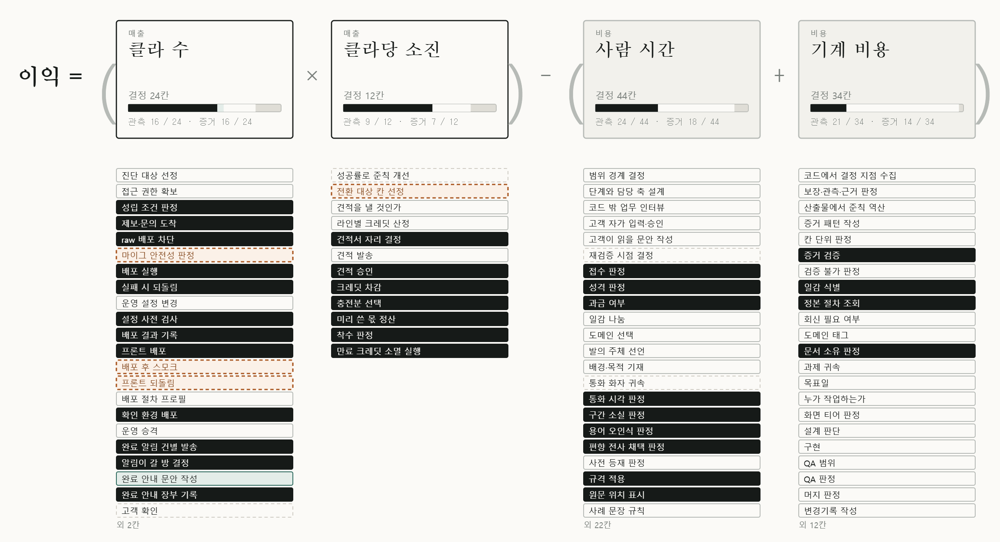

비개발 대표를 위한 TIPS 준비 노트1 / 5
TIPS 준비,
어디서부터
해야 할까요?
사업계획서를 쓰기 전에
먼저 세워야 할 두 개의 축이 있습니다.
사업 축
기술 축
R&D 과제
사업계획서를 쓰기 전에
먼저 세워야 할 두 개의 축이 있습니다.

이익을 이루는 숫자를 결정 단위로 쪼개고,
지금 재고 있는 곳과 비어 있는 곳을 지도로 보여드립니다.
사업 축과 기술 축이 만나는 자리,
우리 회사 지금 위치부터 진단합니다.